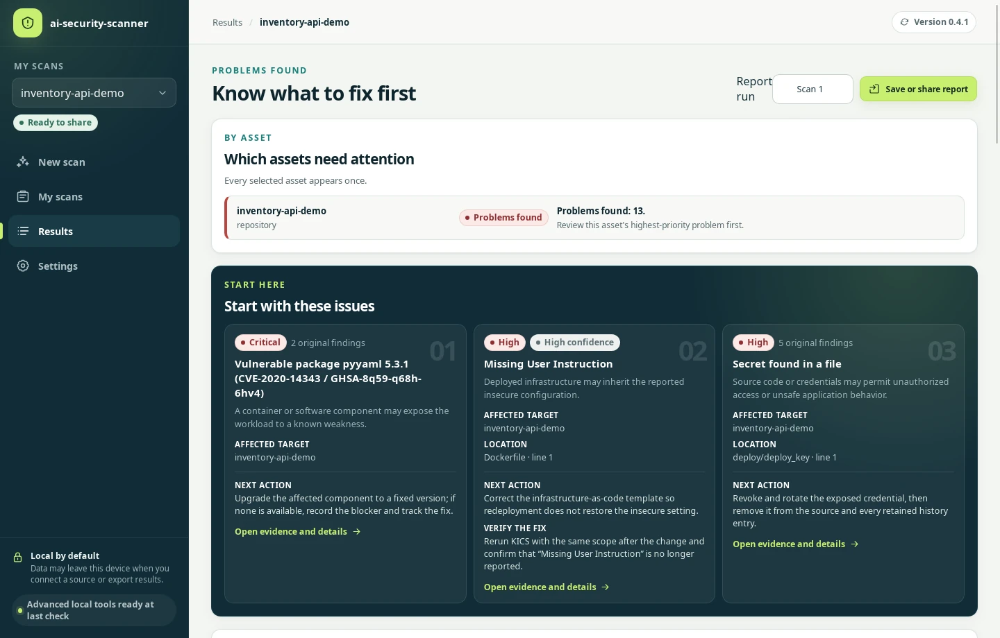
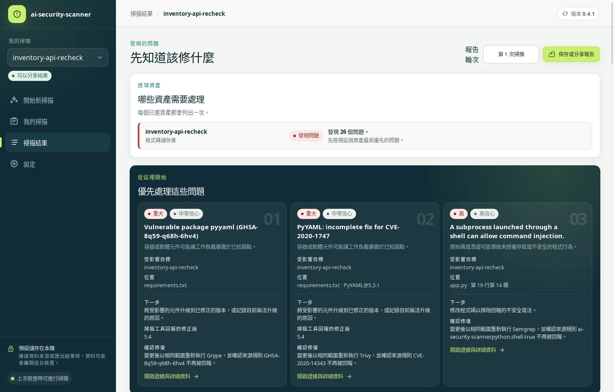
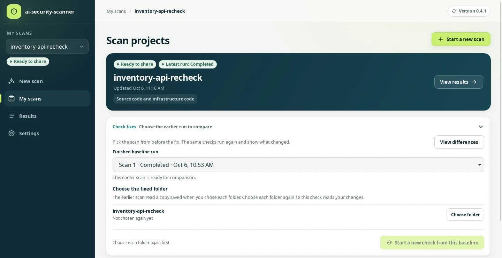
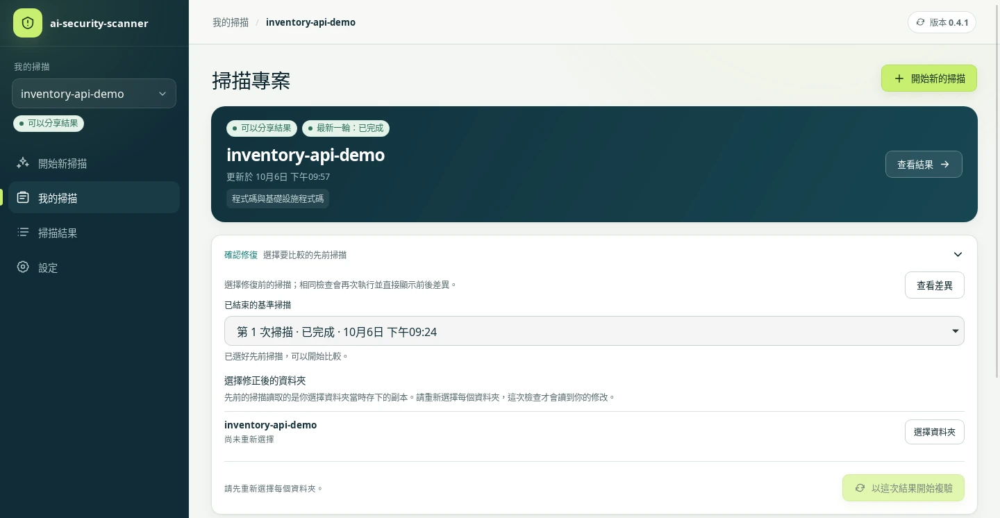
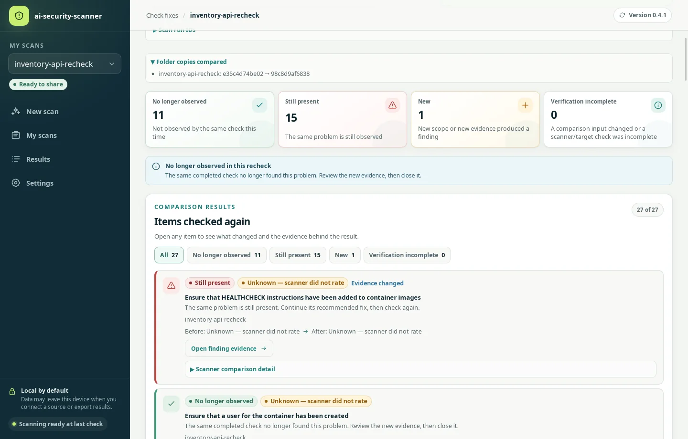
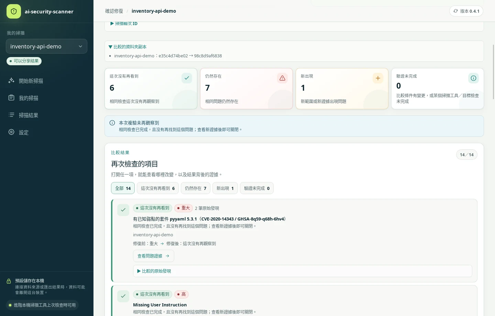
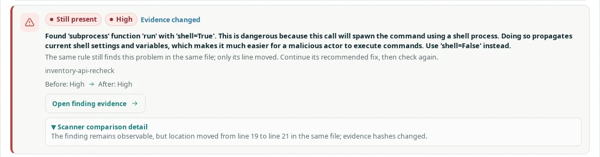
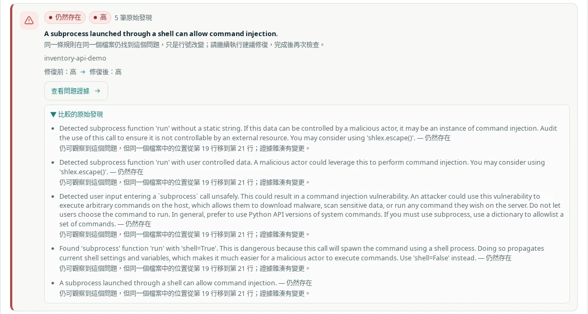
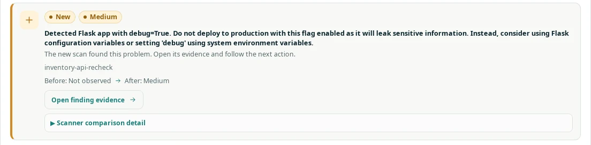
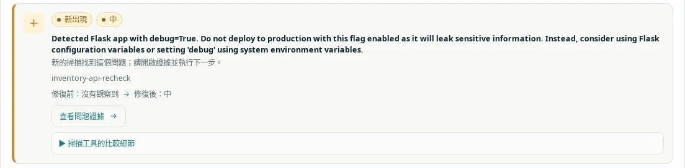

Scan 1 / before the fix第 1 次掃描 / 修正前
26 problems26 個問題
2 Critical, 10 High, 6 Medium, 3 Low, 1 Informational and 4 without a scanner rating.2 個重大、10 個高、6 個中、3 個低、1 個資訊，另有 4 個掃描工具未評等。
Real scan / 2026-10-06真實掃描 / 2026-10-06
We scanned a small demo project, fixed some of its problems and checked it again. The app compared the two scans.我們掃描一個小型示範專案，修正其中幾個問題後再檢查一次，由程式比較兩次掃描的結果。
Made with development builds after v0.4.1: the scans with commit 054e716, the Scan 2 report with f02a30d. v0.4.1 does not have step 4, choosing the fixed folder again (it scans the copy saved when the folder was first chosen), or the comparison at the top of the Scan 2 report.使用 v0.4.1 之後的開發版本製作：掃描使用 commit 054e716，第 2 次掃描的報告使用 f02a30d。v0.4.1 沒有第 4 步「重新選擇修正後的資料夾」（它掃描的是第一次選擇資料夾時保存的副本），也沒有第 2 次掃描報告開頭的比較。
01
inventory-api-recheck is a small Flask service written for this demo. It has five planted problems:inventory-api-recheck 是為這次示範寫的小型 Flask 服務，刻意放入五種問題：
02
The app scanned the folder with eight tools in about 13 minutes on the test computer. All eight completed. The report found 26 problems, 12 of them Critical or High, and starts with the vulnerable PyYAML version.程式用八個工具掃描這個資料夾，在測試電腦上約 13 分鐘完成，八個工具都跑完。報告找到 26 個問題，其中 12 個是重大或高風險，並建議先處理有弱點的 PyYAML 版本。


Checkov 3.3.13 · Gitleaks 8.30.1 · Grype 0.117.0 · KICS 2.1.20 · Semgrep 1.174.0 · Syft 1.51.0 · Trivy 0.74.0 · TruffleHog 3.97.0. Syft lists the software packages; it does not report problems. Both scans used the same versions.Checkov 3.3.13 · Gitleaks 8.30.1 · Grype 0.117.0 · KICS 2.1.20 · Semgrep 1.174.0 · Syft 1.51.0 · Trivy 0.74.0 · TruffleHog 3.97.0。Syft 負責列出軟體套件，不回報問題。兩次掃描使用相同版本。
03
One commit fixed four of the five problems and left the shell call alone. It also turned on Flask debug mode on purpose, to see whether the check catches a new problem.一個 commit 修正了五種問題中的四種，shell 呼叫則維持原樣；另外刻意開啟 Flask 的除錯模式，看看檢查能不能抓到新問題。
deploy/deploy_key deleted
.gitignore added: deploy/*_key
--- a/app.py
+++ b/app.py
def import_inventory():
- # Accepts an inventory list as YAML.
- items = yaml.load(request.data, Loader=yaml.Loader)
- return jsonify({"imported": len(items or [])})
+ # Accepts an inventory list as YAML. safe_load builds only plain data.
+ items = yaml.safe_load(request.data)
+ if not isinstance(items, list):
+ return jsonify({"error": "expected a list"}), 400
+ return jsonify({"imported": len(items)})
...
if __name__ == "__main__":
- app.run(host="127.0.0.1", port=8080)
+ app.run(host="127.0.0.1", port=8080, debug=True)
--- a/requirements.txt
+++ b/requirements.txt
-PyYAML==5.3.1
+PyYAML==6.0.2
--- a/Dockerfile
+++ b/Dockerfile
+RUN useradd --create-home --uid 10001 app
+USER app04
A scan reads a copy of the folder saved when you choose it. Before checking again, choose the folder again in My scans → Check fixes. Here the new copy had 3 files changed, 1 added and 1 removed.掃描讀取的是選擇資料夾時保存的副本。再次檢查前，先到「我的掃描 → 確認修復」重新選擇資料夾。這次的新副本有 3 個檔案變更、1 個新增、1 個移除。


05
The same eight tools ran again, in about 12 minutes. Every check completed in both scans with the same tool versions, so every item could be compared.同樣的八個工具再跑一次，約 12 分鐘。兩次掃描的每項檢查都已完成，工具版本也相同，所以每一項都能比較。


| Outcome結果 | Items項目 | What they were內容 |
|---|---|---|
| No longer observed這次沒有再看到 | 11 | Private key: 5 detections (Gitleaks, TruffleHog, Semgrep ×3). Unsafe YAML loading: 1 (Semgrep). PyYAML 5.3.1: 2 (Grype, Trivy). Container runs as root: 3 (Checkov, KICS, Semgrep).私鑰：5 筆偵測（Gitleaks、TruffleHog、Semgrep ×3）。不安全的 YAML 載入：1 筆（Semgrep）。PyYAML 5.3.1：2 筆（Grype、Trivy）。容器以 root 執行：3 筆（Checkov、KICS、Semgrep）。 |
| Still present仍然存在 | 15 | Shell call: 5 Semgrep detections; the code moved from line 19 to line 21. Flask and requests advisories: 8 (Grype ×4, Trivy ×4). No container health check: 2 (Checkov, KICS).shell 呼叫：5 筆 Semgrep 偵測，程式碼從第 19 行移到第 21 行。Flask 與 requests 的安全公告：8 筆（Grype ×4、Trivy ×4）。容器沒有健康檢查：2 筆（Checkov、KICS）。 |
| New新出現 | 1 | Flask debug mode (Semgrep, app.py line 26).Flask 除錯模式（Semgrep，app.py 第 26 行）。 |
| Verification incomplete驗證未完成 | 0 | — |




06
07
Both reports were saved from the app with sensitive identifiers hidden, so the asset is named Asset 1.兩份報告都從程式儲存，並遮罩敏感識別資訊，所以資產名稱顯示為「Asset 1」。
Scan 1 / before the fix第 1 次掃描 / 修正前
2 Critical, 10 High, 6 Medium, 3 Low, 1 Informational and 4 without a scanner rating.2 個重大、10 個高、6 個中、3 個低、1 個資訊，另有 4 個掃描工具未評等。
Scan 2 / after the fix第 2 次掃描 / 修正後
0 Critical, 5 High, 7 Medium, 3 Low and 1 without a scanner rating. The report opens with what changed since Scan 1.0 個重大、5 個高、7 個中、3 個低，另有 1 個掃描工具未評等。報告開頭先說明與第 1 次掃描相比的變化。
How these files were made: README · File checksums: SHA256SUMS.txt製作方式：說明文件 · 檔案雜湊值：SHA256SUMS.txt